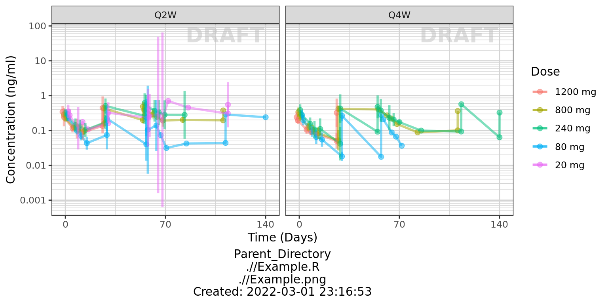
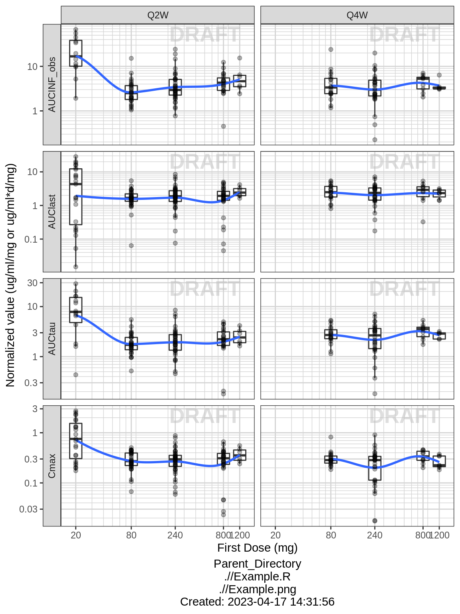
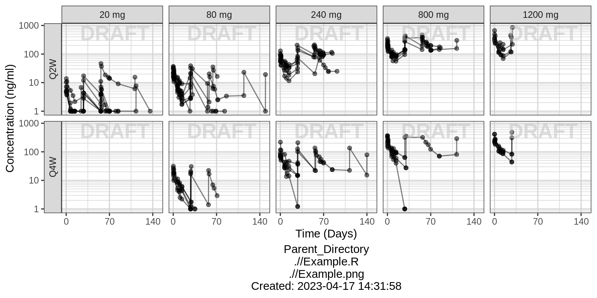
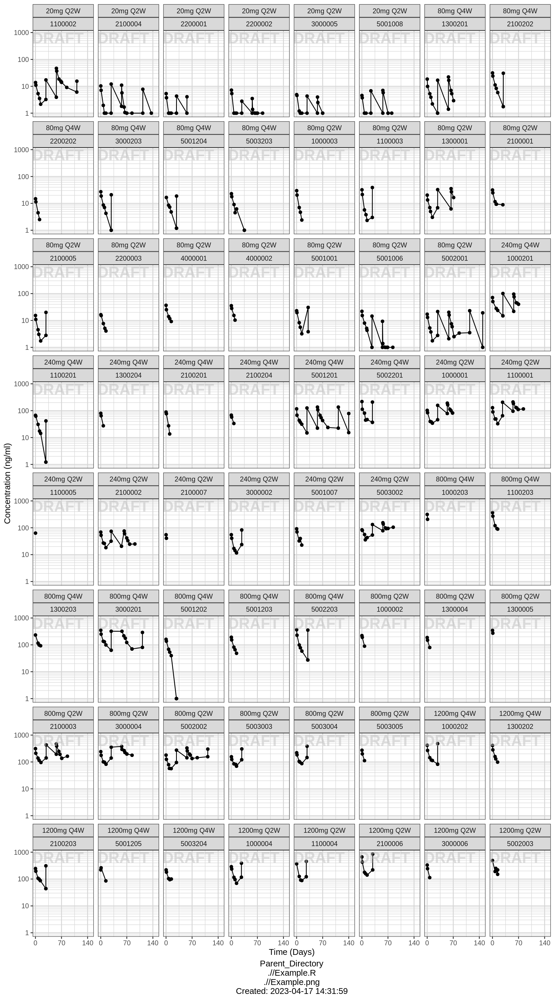

PK - Multiple Ascending Dose - Using Novartis dzz file
Andy Stein
Overview
This document contains PK exploratory graphs and also the R code that generates these graphs, starting from the dzz and PPtmp files that are stored at the links below. For detailed thougths on how to interpret these graphs, please consult the other xGx PK pages for Single Ascending Dose and Multiple Ascending Dose
Data specifications can be accessed on Datasets and Rmarkdown template to generate this page can be found on Rmarkdown-Template. ### Setup
#add key packages
library(ggplot2)
library(tidyr)
library(dplyr)
library(stringr)
library(xgxr)#, lib.loc = "../Rlib")
#flag for labeling figures as draft
status = "DRAFT"
# ggplot settings
xgx_theme_set()
# directories for saving individual graphs
dirs = list(
parent_dir= "Parent_Directory",
rscript_dir = "./",
rscript_name = "Example.R",
results_dir = "./",
filename_prefix = "",
filename = "Example.png")Load in data from dzz (concentrations) and format for plotting
#load data located here:
data_in = read.csv("../Data/dzz_PKConc.csv",stringsAsFactors = FALSE)
#create columns with dosing regimen information, based on ARM
LOQassay = 1
drug_name = "ABC123"
#create simplified column names for plotting
data = data_in %>%
mutate(TRTACT = str_replace(ARM,"Phase Ib? ",""),
TRTACT = str_replace(TRTACT,paste0(drug_name," "),""),
TRTACT = str_extract(TRTACT ,"^\\d* *mg Q\\dW"),
DOSE = as.numeric(str_extract(TRTACT,"\\d*")),
REGIMEN = str_extract(TRTACT,"Q\\dW")) %>%
arrange(DOSE, desc(REGIMEN), lubridate::ymd_hms(PCDTC)) %>%
mutate(TRTACT_high2low = factor(TRTACT,levels = rev(unique(TRTACT))),
TRTACT_low2high = factor(TRTACT,levels = unique(TRTACT)),
DOSE_mg = paste(DOSE,"mg"),
DOSE_high2low = factor(DOSE_mg, levels = rev(unique(DOSE_mg))),
DOSE_low2high = factor(DOSE_mg, levels = unique(DOSE_mg)),
ID = SUBJID,
CYCLE = as.numeric(substr(VISIT,7,8))) %>%
group_by(ID) %>%
mutate(TIME = as.numeric((lubridate::ymd_hms(PCDTC) -
lubridate::ymd_hms(first(PCDTC)))/3600),
TIMEUNIT = "hours",
DAY_OF_CYCLE = TMTPT,
NOMTIME = (CYCLE-1)*28*24+DAY_OF_CYCLE,
LIDV = as.numeric(RESN),
CENS = LIDV < LOQassay,
LIDV = ifelse(CENS, LOQassay, LIDV),
LIDVNORM = RESN/DOSE,
LIDV_UNIT = "ng/ml") %>%
select(-TRTACT) %>%
ungroup() %>%
filter(NOMTIME > 0, TIME > 0, !is.na(TIME), !is.na(LIDV))Load in data from PPtmp (NCA) and format for plotting
nca = read.csv("../Data/PPtmp_NCA.csv",stringsAsFactors = FALSE)
#create columns with dosing regimen information, based on ARM
nca = nca %>%
mutate(ID = SUBJID,
TRTACT = str_replace(ARM,"Phase Ib? ",""),
TRTACT = str_replace(TRTACT,paste0(drug_name," "),""),
TRTACT = str_extract(TRTACT,"^\\d* *mg Q\\dW"),
DOSE = as.numeric(str_extract(TRTACT,"\\d*")),
REGIMEN = str_extract(TRTACT,"Q\\dW"),
PPORRESNnorm = PPORRESN/DOSE) %>%
arrange(DOSE,desc(REGIMEN)) %>%
mutate(TRTACT_high2low = factor(TRTACT,levels=rev(unique(TRTACT))),
TRTACT_low2high = factor(TRTACT,levels=unique(TRTACT))) Specify units
#units and labels
time_units_dataset = "hours"
time_units_plot = "day"
trtact_label = "Dose"
dose_label = "Dose (mg)"
conc_label = "Concentration (ng/ml)"
concnorm_label = "Normalized Concentration (ng/ml)/mg"
conc_units = "ng/ml"
AUC_units = "h.ng/ml"Provide an overview of the data
Summarize the data in a way that is easy to visualize the general trend of PK over time and between doses. Using summary statistics can be helpful, e.g. Mean +/- SE, or median, 5th & 95th percentiles. Consider either coloring by dose or faceting by dose. Depending on the amount of data one graph may be better than the other.
When looking at summaries of PK over time, there are several things to observe. Note the number of doses and number of time points or sampling schedule. Observe the overall shape of the average profiles. What is the average Cmax per dose? Tmax? Does the elimination phase appear to be parallel across the different doses? Is there separation between the profiles for different doses? Can you make a visual estimate of the number of compartments that would be needed in a PK model? ### Concentration over time, faceted by regimen, colored by dose
gg <- ggplot(data = data, aes(x = NOMTIME, y = LIDV, color = DOSE_high2low, group=DOSE_high2low))
gg <- gg + facet_grid(~REGIMEN)
gg <- gg + xgx_scale_y_log10()
gg <- gg + xgx_scale_x_time_units(units_dataset = time_units_dataset,
units_plot = time_units_plot)
gg <- gg + labs(y=conc_label, color = trtact_label)
gg <- gg + xgx_annotate_status(status)
gg <- gg + xgx_annotate_filenames(dirs)
gg1<- gg
gg <- gg + xgx_stat_ci(conf_level = 0.95, geom = list("point","line","errorbar"), alpha = 0.5, position = position_dodge(width = 24*5))
#if saving copy of figure, replace xgx_annotate lines with xgx_save() shown below:
#xgx_save(width,height,dirs,"filename_main",status)
print(gg)
Concentration over time, faceted by regimen and cycle number, colored by dose
gg <- gg1
gg <- gg + xgx_stat_ci(conf_level = 0.95, geom = list("point","line","errorbar"), alpha = 0.5, position = position_dodge(width = 24))
gg <- gg %+% filter(data, CYCLE %in% c(1,3))
gg <- gg + aes(x = DAY_OF_CYCLE, y = LIDV)
gg <- gg + labs(x = "Day")
gg <- gg + facet_grid(CYCLE~REGIMEN, labeller = label_both, switch = "y")
print(gg)
Assess the dose linearity of exposure
Dose normalized concentration
gg <- ggplot(data = data, aes(x = NOMTIME, y = LIDVNORM, color = DOSE_high2low, group=DOSE_high2low))
gg <- gg + xgx_stat_ci(conf_level = 0.95, geom = list("point","line","errorbar"), alpha = 0.5, position = position_dodge(width = 24*5))
gg <- gg + facet_grid(~REGIMEN)
gg <- gg + xgx_scale_y_log10()
gg <- gg + xgx_scale_x_time_units(units_dataset = time_units_dataset,
units_plot = time_units_plot)
gg <- gg + labs(y=conc_label, color = trtact_label)
gg <- gg + xgx_annotate_status(status)
gg <- gg + xgx_annotate_filenames(dirs)
#if saving copy of figure, replace xgx_annotate lines with xgx_save() shown below:
#xgx_save(width,height,dirs,"filename_main",status)
print(gg)
Noncompartmental Analysis
Observe the dose normalized AUC over different doses. Does the relationship appear to be constant across doses or do some doses stand out from the rest? Can you think of reasons why some would stand out? For example, the lowest dose may have dose normalized AUC much higher than the rest, could this be due to CENS observations? If the highest doses have dose normalized AUC much higher than the others, could this be due to nonlinear clearance, with clearance saturating at higher doses? If the highest doses have dose normalized AUC much lower than the others, could there be saturation of bioavailability, reaching the maximum absorbable dose?
nca.filter = nca %>%
filter(WNLPARM %in% c("AUCINF_obs","AUClast","AUCtau","Cmax"))
gg <- ggplot(nca.filter,aes(x=DOSE,y=PPORRESNnorm,group=DOSE))
gg <- gg + geom_boxplot(outlier.shape=NA)
gg <- gg + geom_smooth(aes(group=NULL),show.legend = FALSE,se=FALSE)
gg <- gg + geom_jitter(width=0,alpha=.3)
gg <- gg + facet_grid(WNLPARM~REGIMEN,scales="free_y",switch="y")
gg <- gg + xgx_scale_y_log10()
gg <- gg + xgx_scale_x_log10(breaks=unique(data$DOSE))
gg <- gg + labs(x="First Dose (mg)",
y="Normalized value (ug/ml/mg or ug/ml*d/mg)")
gg <- gg + xgx_annotate_status(status)
gg <- gg + xgx_annotate_filenames(dirs)
#if saving copy of figure, replace xgx_annotate lines with xgx_save() shown below:
#xgx_save(width,height,dirs,"filename_main",status)
print(gg)
Explore variability
Use spaghetti plots to visualize the extent of variability between individuals. The wider the spread of the profiles, the higher the between subject variability. Distinguish different doses by color, or separate into different panels. If coloring by dose, do the individuals in the different dose groups overlap across doses? Dose there seem to be more variability at higher or lower concentrations? ### Spaghetti, grouped by dose
gg <- ggplot(data = data, aes(x=TIME, y=LIDV, group=ID))
gg <- gg + geom_line(mapping=aes(group=ID), alpha = 0.5)
gg <- gg + geom_point(alpha = 0.5)
gg <- gg + xgx_scale_x_time_units(units_dataset = time_units_dataset,
units_plot = time_units_plot)
gg <- gg + xgx_scale_y_log10()
gg <- gg + labs(y=conc_label, color = trtact_label)
gg <- gg + theme(legend.position="none")
gg <- gg + facet_grid(REGIMEN~DOSE_low2high,switch="y")
gg <- gg + xgx_annotate_status(status)
gg <- gg + xgx_annotate_filenames(dirs)
#if saving copy of figure, replace xgx_annotate lines with xgx_save() shown below:
#xgx_save(width,height,dirs,"filename_main",status)
print(gg)
Explore irregularities in profiles
Plot individual profiles in order to inspect them for any irregularities. Inspect the profiles for outlying data points that may skew results or bias conclusions. Looking at the shapes of the individual profiles now, do they support your observations made about the mean profile (e.g. number of compartments, typical Cmax, Tmax)? ### Individual profiles
gg <- ggplot(data = data, aes(x=TIME, y=LIDV, group=ID))
gg <- gg + geom_line()
gg <- gg + geom_point()
gg <- gg + facet_wrap(~TRTACT_low2high + ID)
gg <- gg + xgx_scale_x_time_units(units_dataset = time_units_dataset,
units_plot = time_units_plot)
gg <- gg + xgx_scale_y_log10()
gg <- gg + labs(y=conc_label, color = trtact_label)
gg <- gg + theme(legend.position="none")
gg <- gg + xgx_annotate_status(status)
gg <- gg + xgx_annotate_filenames(dirs)
#if saving copy of figure, replace xgx_annotate lines with xgx_save() shown below:
#xgx_save(width,height,dirs,"filename_main",status)
print(gg)
R Session Info
sessionInfo()## R version 4.1.0 (2021-05-18)
## Platform: x86_64-pc-linux-gnu (64-bit)
## Running under: Red Hat Enterprise Linux
##
## Matrix products: default
## BLAS/LAPACK: /CHBS/apps/EB/software/imkl/2019.1.144-gompi-2019a/compilers_and_libraries_2019.1.144/linux/mkl/lib/intel64_lin/libmkl_gf_lp64.so
##
## Random number generation:
## RNG: Mersenne-Twister
## Normal: Inversion
## Sample: Rounding
##
## locale:
## [1] LC_CTYPE=en_US.UTF-8 LC_NUMERIC=C LC_TIME=en_US.UTF-8 LC_COLLATE=en_US.UTF-8
## [5] LC_MONETARY=en_US.UTF-8 LC_MESSAGES=en_US.UTF-8 LC_PAPER=en_US.UTF-8 LC_NAME=C
## [9] LC_ADDRESS=C LC_TELEPHONE=C LC_MEASUREMENT=en_US.UTF-8 LC_IDENTIFICATION=C
##
## attached base packages:
## [1] stats graphics grDevices utils datasets methods base
##
## other attached packages:
## [1] survminer_0.4.9 ggpubr_0.4.0 survival_3.2-11 knitr_1.33 broom_0.7.9 caTools_1.18.2 DT_0.18
## [8] forcats_0.5.1 stringr_1.4.0 purrr_0.3.4 readr_2.0.1 tibble_3.1.3 tidyverse_1.3.1 zoo_1.8-9
## [15] xgxr_1.1.1 gridExtra_2.3 tidyr_1.1.3 dplyr_1.0.7 ggplot2_3.3.5
##
## loaded via a namespace (and not attached):
## [1] colorspace_2.0-2 ggsignif_0.6.2 rio_0.5.27 ellipsis_0.3.2 class_7.3-19
## [6] rsconnect_0.8.24 htmlTable_2.2.1 markdown_1.1 base64enc_0.1-3 fs_1.5.0
## [11] gld_2.6.2 rstudioapi_0.13 proxy_0.4-26 farver_2.1.0 Deriv_4.1.3
## [16] fansi_0.5.0 mvtnorm_1.1-2 lubridate_1.7.10 xml2_1.3.2 codetools_0.2-18
## [21] splines_4.1.0 rootSolve_1.8.2.2 Formula_1.2-4 jsonlite_1.7.2 km.ci_0.5-2
## [26] binom_1.1-1 cluster_2.1.2 dbplyr_2.1.1 png_0.1-7 compiler_4.1.0
## [31] httr_1.4.2 backports_1.2.1 assertthat_0.2.1 Matrix_1.3-3 cli_3.0.1
## [36] prettyunits_1.1.1 htmltools_0.5.1.1 tools_4.1.0 gtable_0.3.0 glue_1.4.2
## [41] lmom_2.8 Rcpp_1.0.7 carData_3.0-4 cellranger_1.1.0 jquerylib_0.1.4
## [46] vctrs_0.3.8 nlme_3.1-152 crosstalk_1.1.1 xfun_0.25 openxlsx_4.2.4
## [51] rvest_1.0.1 lifecycle_1.0.0 rstatix_0.7.0 MASS_7.3-54 scales_1.1.1
## [56] hms_1.1.0 expm_0.999-6 RColorBrewer_1.1-2 curl_4.3.2 yaml_2.2.1
## [61] Exact_2.1 KMsurv_0.1-5 pander_0.6.4 sass_0.4.0 rpart_4.1-15
## [66] reshape_0.8.8 latticeExtra_0.6-29 stringi_1.7.3 highr_0.9 e1071_1.7-8
## [71] checkmate_2.0.0 zip_2.2.0 boot_1.3-28 rlang_0.4.11 pkgconfig_2.0.3
## [76] bitops_1.0-7 evaluate_0.14 lattice_0.20-44 htmlwidgets_1.5.3 labeling_0.4.2
## [81] tidyselect_1.1.1 GGally_2.1.2 plyr_1.8.6 magrittr_2.0.1 R6_2.5.1
## [86] DescTools_0.99.42 generics_0.1.0 Hmisc_4.5-0 DBI_1.1.1 pillar_1.6.2
## [91] haven_2.4.3 foreign_0.8-81 withr_2.4.2 mgcv_1.8-35 abind_1.4-5
## [96] RCurl_1.98-1.4 nnet_7.3-16 car_3.0-11 modelr_0.1.8 crayon_1.4.1
## [101] survMisc_0.5.5 utf8_1.2.2 tzdb_0.1.2 rmarkdown_2.11 jpeg_0.1-9
## [106] progress_1.2.2 grid_4.1.0 readxl_1.3.1 minpack.lm_1.2-1 data.table_1.14.0
## [111] reprex_2.0.1 digest_0.6.27 xtable_1.8-4 munsell_0.5.0 bslib_0.2.5.1